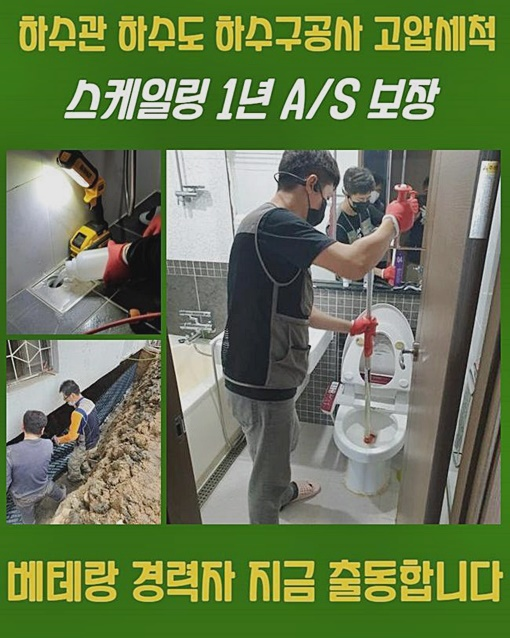
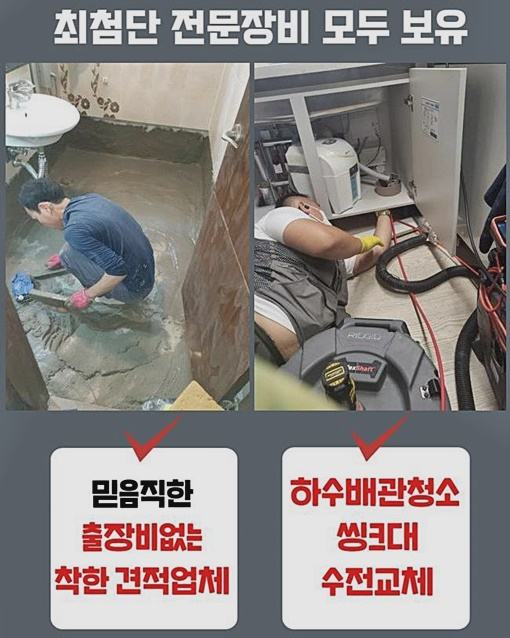
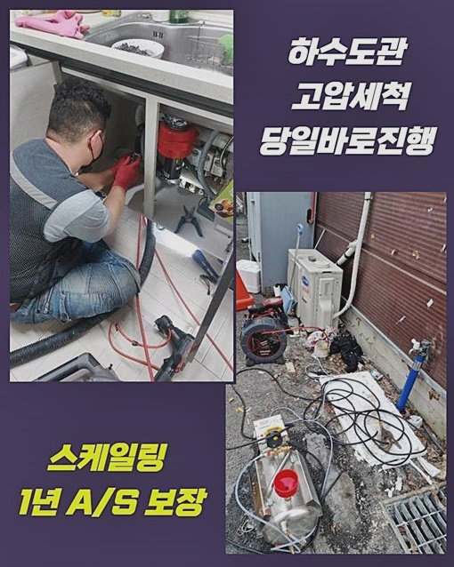
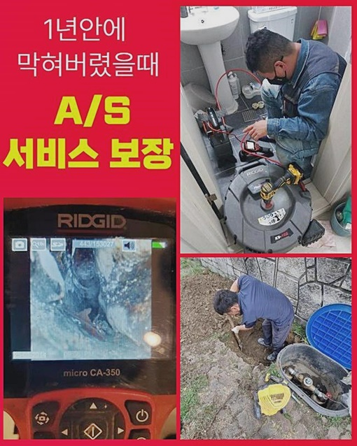
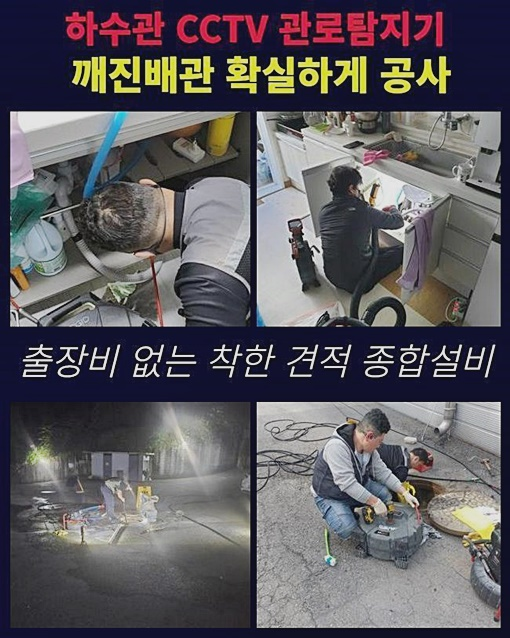
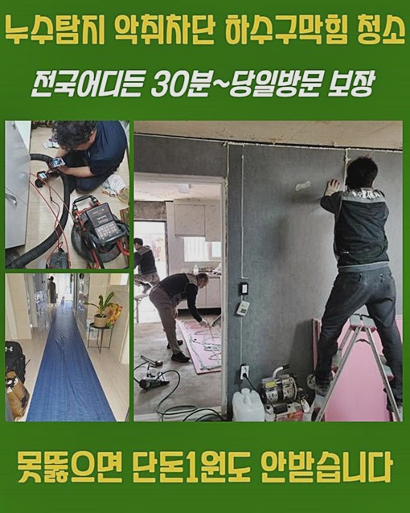
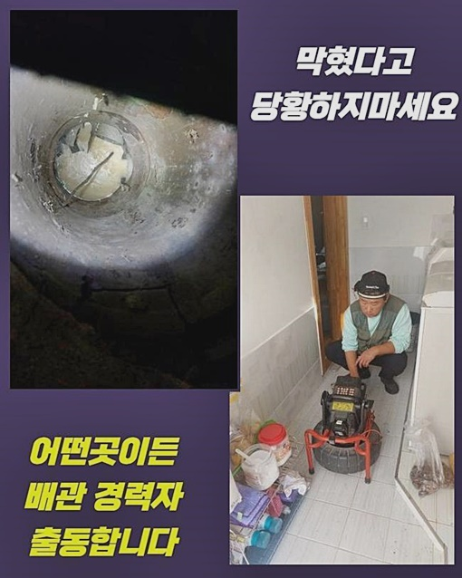

🏠 남양주 이패동하수구역류 퇴계원읍 배수로뚫기 해결방법
양주 남양 싱크대막힘 전문 시공 후기

📋 작업 개요
- 위치: 양주 남양, 남양, 양주
- 서비스 유형: 싱크대막힘, 하수구막힘, 배관막힘, 역류해결, 뚫는업체, 고압세척, 설비공사, 악취차단
- 작업 일시: 2024. 7. 23. 9:13
- 업체명: 하수구수사대 (010-5615-2118)
🔍 문제 상황
남양주 이패동하수구역류 퇴계원읍 배수로뚫기 해결방법
우리팀은 의뢰자가 필요로 하는 시간에 언제라도 내방갈 수 있으며 빠르게 처리합니다
일과가 끝난 시간이나 빨간날인 경우라 해도 바로 방문드려 수선해 드리죠
의뢰인의 신청에 재빨리 응대하여 질높은 통수 업무를 시행하는 부분이 우리팀의 기본지침입니다
빠른 안내와 공사로 높은 만족감을 느끼실 수 있게끔 노력을 다합니다
진단과정에서는 근원적인 부분을 간파하는 부분에 노동력이 꽤 쓰였으나 건축물의 배수관이 기폭제가 되었다는 것을 확정하고 대책을 수립했어요
결과적으로 건물 사용자들의 괴로움을 줄이고 내방객들이 가뿐하게 접근할 수 있게 역할을 다하였답니다
해당되는 사안은 여러가지 동기들로 말미암아 나타나기 때문에 발빠른 응수가 불가결합니다
저희들은 언제라도 의뢰자의 고민에 즉각 응대하여 질높은 작업을 시행해 드릴게요
건축물 안쪽에서 생겨난 물막힘 양상은 작년부터 목격되었다는 부분을 알게 되었답니다
이것으로 부근의 상가들에게도 거북함을 유발하게 했는데 특별하게 물을 쓰는 과정이 힘들었다고 말씀하셨어요
이건 업장 운용에 가볍지 않은 누를 일으켰기에 재빠른 대응이 필수적 요소였어요
배수와 관계된 트러블은 건조물의 시스템 거기다 부분적인 고장을 포함하여 다채로운 이유로 일어날 수 있답니다

🔎 원인 분석
💡 전문가 진단: 정밀 진단 장비를 사용하여 슬러지의 고착 여부를 판명하고 타격/세척 작업을 실시했습니다.
그렇기 때문에 근원점을 찾아내려면 다양한 변인을 살펴보아야 하죠
보통의 주택공간에서 여러가지 상황을 진행한 것을 포함하여 항시 기술 점검과 교육 등의 과정을 시행하여 최고의 자리를 유지하고 있어요
저흰 최고급 내시경촬영설비와 석션장비를 비롯해 물이 유출되는 지점을 파악하게 만들어주는 여러 기기들을 갖추고 있어서 여타 기술자들과 비교하여도 상등이라 불릴 수 있었답니다
이러한 기기들을 근간으로 정밀한 관찰과 차단을 만든 찌꺼기들을 없애나가는 단계를 밟고 있는데요
우리팀은 민첩하게 차단의 까닭을 구조물의 하단에 설치된 배수파이프에서 알아냈습니다
이 부위는 보호 커버로 인하여 용이하게 발견된 것은 아니었지만 메인 이슈가 되었던 처소였어요
즉각적으로 적합한 기기를 이용하여 고장을 조속하게 처리할 수 있었답니다
일반적인 거주지에서부터 공용 시설까지 여러방면에서 갑작스럽게 발생되는 사태이기에 전문적인 처방이 필수적이죠
만일 하수관고장이 심중한 상황으로 발전하였다면 테크니션의 손길이 요구되며 혼자 해결하려 한다면 되레 장애가 심화될 수밖에 없습니다
그러니 여러가지 곤란을 만나시는 것보단 기술자에게 의뢰하는 게 낫습니다
기계가 배관면에 끼이게 될 가망이 높았기에 얇은 스프링 분쇄기를 사용해서 고속으로 돌아가게 하여 고형물을 소거시켰고 반복적으로 작업해 깔끔한 배관면으로 바꿔냈습니다
세대 안의 화장실 공간과 주방과 관련된 배관 안에 적체된 찌꺼기들을 처리하고 물세척을 통해서 청결한 마무리가 가능했습니다
결과적으로 물막힘없는 편안한 생활을 지속하고 있어요
빌라나 아파트를 막론하고 배수관에 나타난 고장을 처치하기 위해선 우선 벌어진 동기를 간파해내야 하죠

🔧 작업 과정
잔재들을 소거한 다음에 배관내시경을 통해 관로를 확인하여 무슨 문제점이 발현된 건지 조사했는데요
쉽게 윗부위만 없애는 것에서 그치는 게 아니고 근본적인 문제점을 해결하지 않게 된다면 공사 후 몇 달이 지나고 다시금 차단현상이 빚어질 수 있죠
그래서 저흰 온전한 근원을 간파하지 못하게 된다면 금액 청구를 하지 않는단 기조를 유지하고 있어요
저희의 이러한 태도로 인하여 항상 좋은 결과물을 선물한답니다
저희는 일차로 상단부 침전물부터 쇄소 진행하기로 합의합니다
해당 문제에 관하여 손님께 설명하였고 관로 장애가 예기치 않게 발발한 것이라 했어요
보통사람들은 이유를 들춰내기 까다로우나 우리는 여러 상황들을 마주해 온 배테랑들로만 짜여 있어서 아무 말썽이라도 수리해 냅니다
저흰 숙련성과 친절함을 겸비한 기술인으로 이루어져 있고 이번에 방문하였던 사람도 장기간 수련한 기능공이셨습니다
보시는 바대로 철두철미한 준비로 시공하기에 난해한 문제점도 물리칠 수 있죠
배관카메라를 넣어서 하수관 안을 들여다보니 이물질들이 답답하게 누적된 걸 목도하게 되었어요
이걸 주변의 하수관과 이어진 게 아닌지 알아봐야 하겠단 계획을 세우고 싱크대까지 펼쳐진 하수관을 검점하기로 결단내렸어요
해당되는 부위로 이동하여 안쪽 구석구석을 내시경cctv를 이용 검열했더니 주방의 관로와 맞물려 있던 상황이었어요
이를 통해 생겨나게 된 까닭을 파악하고 조치를 강구할 수가 있었답니다
보시는 바와 같이 분명한 진단과 재빠른 처리가 막힘을 극복하는 데에 핵심적인 구실을 담당한다는 걸 알았죠
다음날 오전에는 다른 의뢰인이 물이 안내려가는 문제로 즉시 내방을 요청했는데요
전문가는 막힘없이 문제의 처소로 이동해 사태를 잠재우기 위하여 필요한 장비류를 갖추었답니다
현재의 문제점을 알아내기 위해서 소량의 액상을 흘려보냈을 때 느릿느릿 가라앉는 모습을 관측했어요
그건 파이프 안쪽에 고형물이 자리잡고 있다는 걸 말해주고 있었어요
점차적으로 심각해지는 사태를 맞닥뜨릴 수 있죠
이것에 대처하여 우리팀은 합당한 수단을 써서 차단된 관로를 복구해낼 수 있었죠
하수관에 생긴 각종 고장들은 전문인력의 방문과 빠른 처치가 필수예요


✅ 작업 완료
본공사 과정에선 휘어진 배수관 내측을 검사해야 해서 요청되는 도구 일체를 전체적으로 써서 능률적으로 시공을 실시했습니다
바깥쪽으로 이어지는 지점까지 편안하게 유속이 이어지게끔 진중하게 일해나가고 있어요
주변 환경의 차이로 인해 일어나기 쉬운 트러블들도 빠르게 대처하여 퀄리티있는 성과를 제시하려고 고군분투합니다
미약한 증세라고 무시하고 방관하시는 분들이 가끔가다 보이는데요
이것은 더 난처한 경우를 발생하게 만드는 이유로 작용할 수 있기 때문에 이상증세를 느끼신다면 신속히 방문요청을 하시는게 옳습니다
고객분들이 신뢰감 넘치는 결과물을 받아보시게끔 진중하게 노력하겠습니다




⚠️ 주방 싱크대 배관 막힘 예방 수칙
- ✅ 기름기가 묻은 식기나 프라이팬은 설거지 전 키친타올로 반드시 기름때를 닦아내세요.
- ✅ 주기적으로 싱크대 개수대에 뜨거운 물을 가득 받아 한 번에 내려 배관 내부 기름을 씻어내세요.
- ✅ 배수구 거름망을 미세한 필터로 사용하시고 음식물 찌꺼기가 틈으로 새어 들지 않게 관리하세요.
- ✅ 베이킹소다와 식초를 뜨거운 물과 함께 일주일에 한 번씩 부어주면 배관 살균과 막힘 예방에 좋습니다.
💡 핵심 정리
- 확실한 장비 작업(내시경 점검 및 샤프트 스케일링)으로 원인을 뿌리 뽑습니다.
- 작업 후 1년 이내에 동일한 부위 재발 시 100% 무상 A/S 서비스를 보장합니다.
- 서울 · 경기 · 인천 전 지역에 24시간 언제든 긴급 출동할 수 있도록 항시 대기 중입니다.
❓ 자주 묻는 질문 (FAQ)
🚨 양주 남양 싱크대막힘 문제로 고민이신가요?
정확한 원인 진단과 확실한 시공으로 재발 없는 해결을 약속드립니다.
24시간 긴급 출동 | 서울 · 경기 · 인천 전지역 | 1년 내 재발 시 무상 A/S